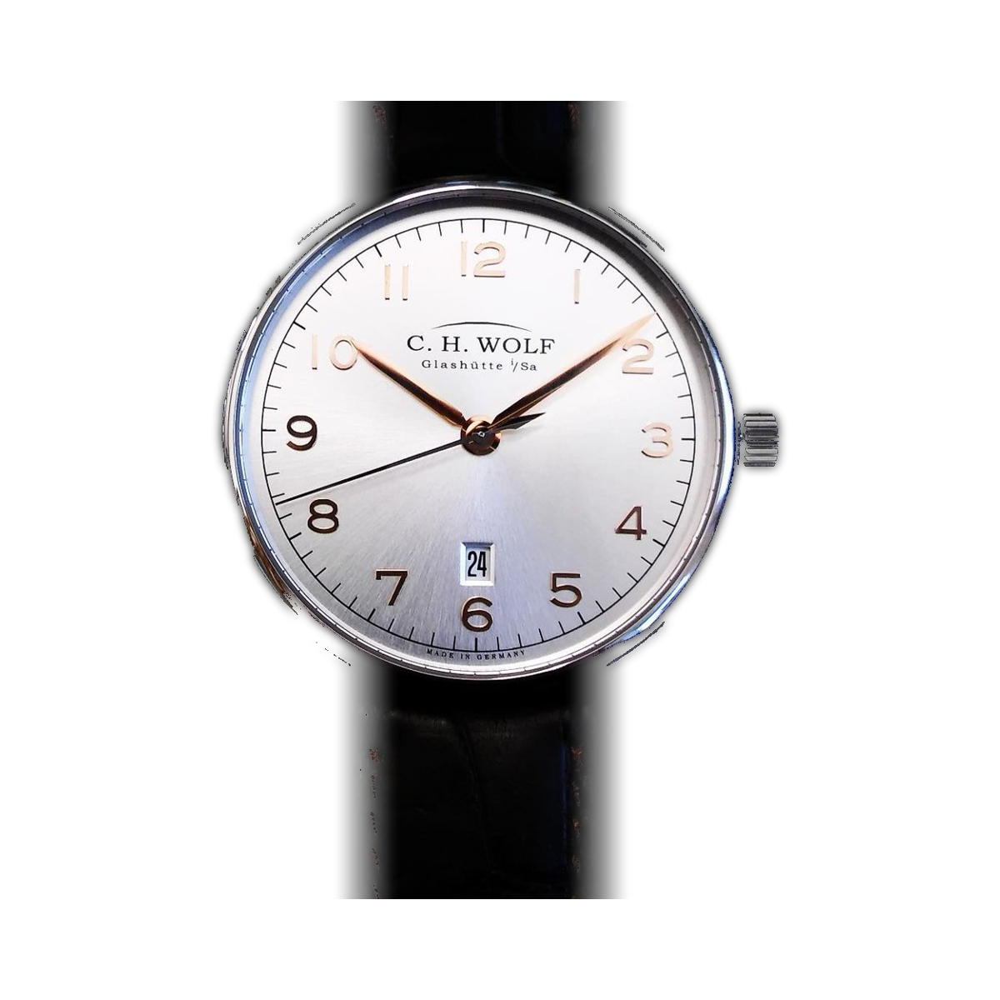

城市生活的从容秩序Composure for City LifeSouveränität für das Stadtleben
Urban 把格拉苏蒂制表的清晰与秩序带入现代城市生活。克制的线条、直观的显示与恰到好处的细节，让腕表在商务、日常与正式场合之间从容切换。它传递的是一种面向当下的城市气质：可靠、自信、懂得分寸，也始终保有自己的风格。 Urban brings the clarity and order of Glashütte watchmaking into modern city life. Restrained lines, intuitive displays and well-judged details let each watch move with ease between business, everyday and formal settings. It conveys a present-day urban character: reliable, self-assured, measured — and always with a style of its own. Urban bringt die Klarheit und Ordnung der Glashütter Uhrmacherei in das moderne Stadtleben. Reduzierte Linien, intuitiv ablesbare Anzeigen und wohldosierte Details lassen jede Uhr mühelos zwischen Beruf, Alltag und formellen Anlässen wechseln. So entsteht ein zeitgemäßer urbaner Charakter: verlässlich, selbstbewusst, mit Sinn für das rechte Maß – und stets mit einer eigenen Handschrift.